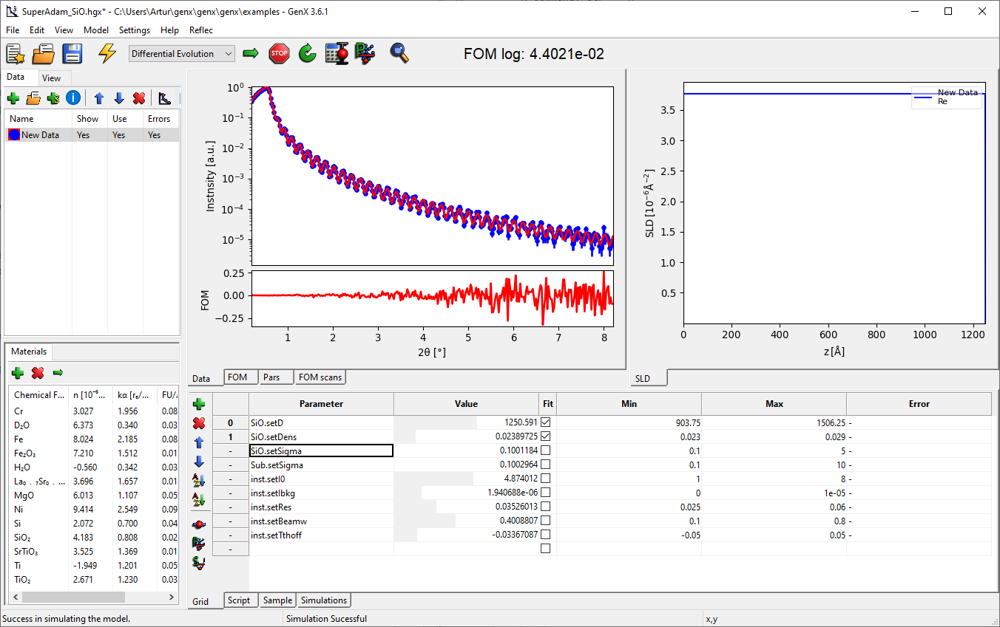
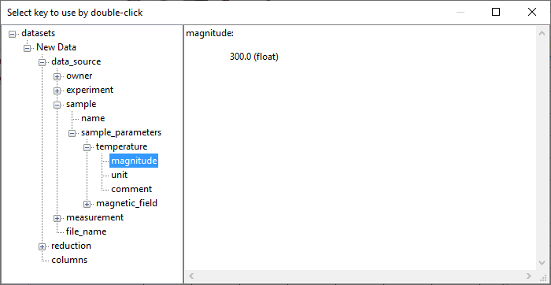

Batch Fitting¶
While GenX allowed fitting sequences of data by loading datafiles through the command line for a long time the version 3.6.1 introduced a GUI interface for convenient fitting of a large number of datasets. This is useful, for example, if the same sample or type of sample has been measured under different conditions like temperature or magnetic field.
Build the model¶
For this example you should create a neutron reflectivity model similar to Neutron reflectivity tutorial with
a Si substrate and around 1300 Å SiO. You can also load the example SuperAdam_SiO.hgx directly.
Download the example sequence of datafiles in SiO_sequence.zip
and extract it to a folder on your computer. Set the data loader to orso or auto and load the first dataset
into your model and simulate.
The interface should look something like this:

Perform an initial refinement to this model with all parameters free. Then uncheck the fit for all parameters but the SiO thickness and density:
Generate a batch sequence¶
Now you should open the batch dialog through the menu . The dialog should show without any entries. Click on Import Data… and select all the extracted filed. This should import 100 files and generate a list with filenames and batch index:

You can manually define a some kind of physical value (e.g. a temperature) to each dataset by editing the second column. (This has to be a real number.) With the meta data that is extracted from the ORSO datafile header it is also possible to automatically generate this column from an entry in the header. For this press the Extract Value button and select the correct parameter from the hirachy using a double-click. Only number values are allowed:
Fit the batch sequence¶
Before starting the fit, make sure the optimizer parameters in are correct for a performant refinement and define adequat breaking conditions. It is advisable to fit one of the datasets to see how large to set the size of Max. Generations and possibly to define a parameter spread to stop, e.g. 0.1 %.
Once you are happy with the configuration press the Fit All button on the batch fitting dialog. This will start fitting from the first item and show dialogs with plots for each of the fitted parameters. These plots will be updated after each successful fit and show the parameter value against the sequence value (here “temperature”). The dataset that is currently being fitted is is shown in the table in red. During the fit you should see something like this:

Note
The check box Keep result values from last will start the next dataset with the parameter results from the previous one. Otherwise the values will be reset to the one used when starting the fits. With Adjust boundaries around last values you can also ajust the min- and max-value settings to be centered around the starting value. This can be useful in situations where you know that a parameter will change significantly over the entire sequence but want to limit the range of variation during a single fit for better convergence.
Final remarks¶
The given data sequence should result in a flat density and thickness variation in the shape of a parabola:

The table with the batch and fit parameters can be copied using ctrl+C and then pasted in a text file or Excel table.
You can stop the batch fit at any point by using the Stop button, which will finish the last dataset unless you press Stop again. Any dataset in the batch stores its own parameters so you can investigate individual results by double-click on the rown label, which will load that dataset into the GUI. All batch datasts are stored in the .hgx file and can later be reviewd.
To regenerate the dataset parameter table and plots you can just select the last one in the sequence and press Fit From Here.
Please let me know if you have good ideas how to improve the batch fitting facility.